Jul 2026
Bildebank til julekortet
Tolv julebilder i CleanUnits stil. Trykk «Kopier» og lim rett inn i Word, eller last ned filen og bruk Sett inn → Bilde.
-
Oslo i vinterdrakt
Vinterbildet fra forsiden, nå med logo på varebilen. 2172 × 724 px.
-
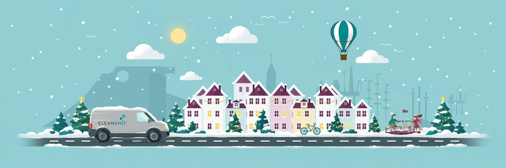
Stavanger i vinterdrakt
Vinterbildet fra Stavanger-siden, nå med logo på varebilen. 2172 × 724 px.
-
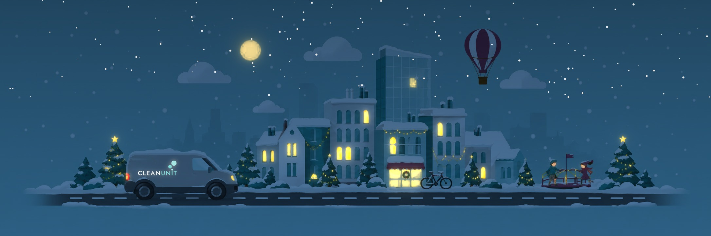
Oslo en vinterkveld
Vinterbyen om natten, med lysende vinduer, måne og stjerner. 2172 × 724 px.
-
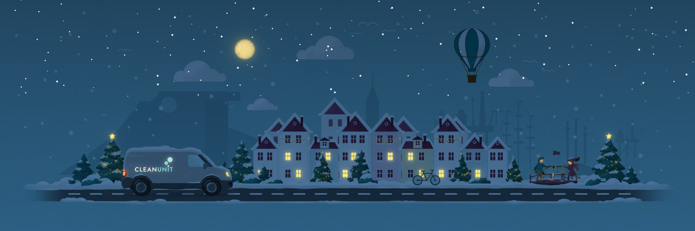
Stavanger en vinterkveld
Stavanger om natten, med lysende vinduer, måne og stjerner. 2172 × 724 px.
-
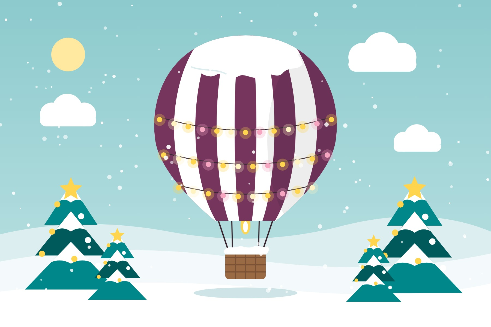
Luftballongen, Oslo
Burgunder ballong med snø på toppen og julelys. 1800 × 1200 px.
-
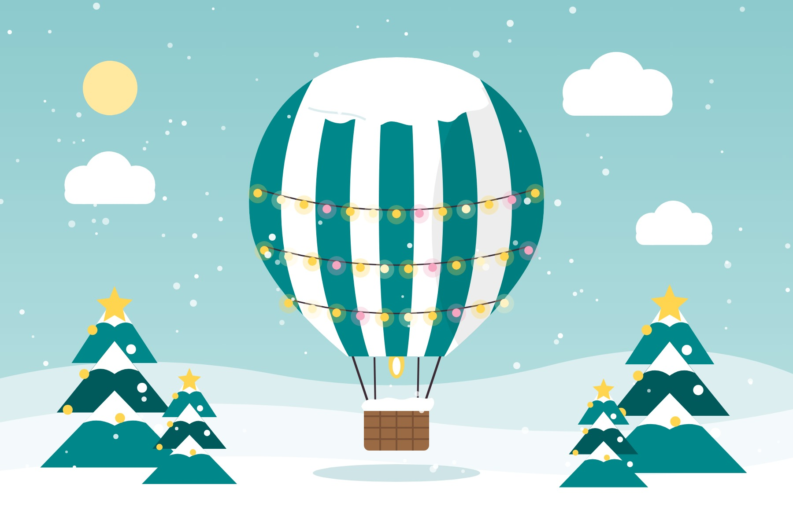
Luftballongen, Stavanger
Grønn ballong med snø på toppen og julelys. 1800 × 1200 px.
-
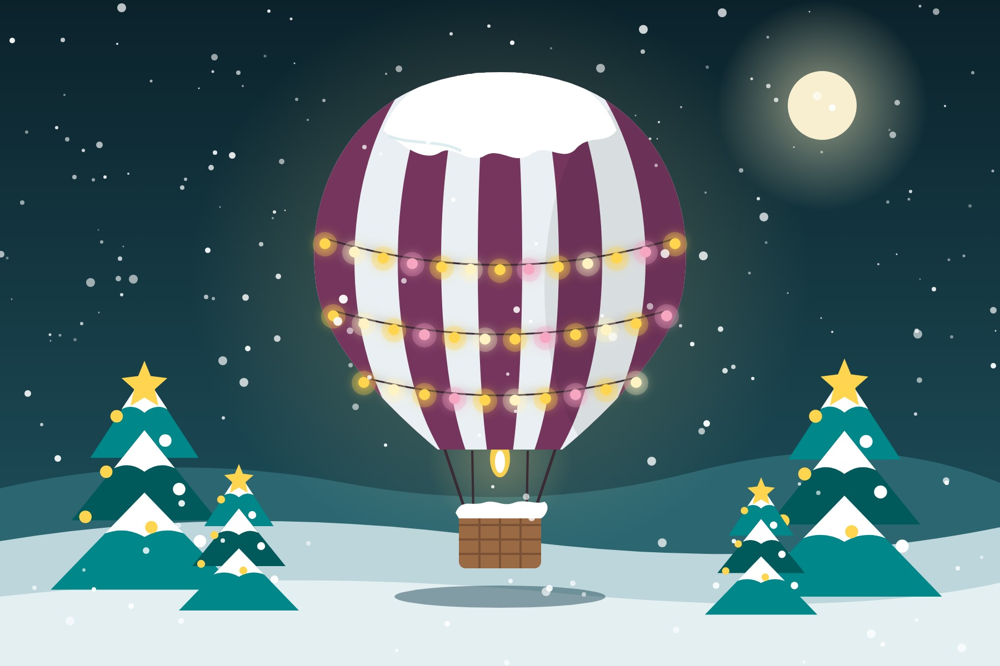
Luftballongen en kveld, Oslo
Burgunder ballong med glødende lyslenker mot nattehimmel. 1800 × 1200 px.
-
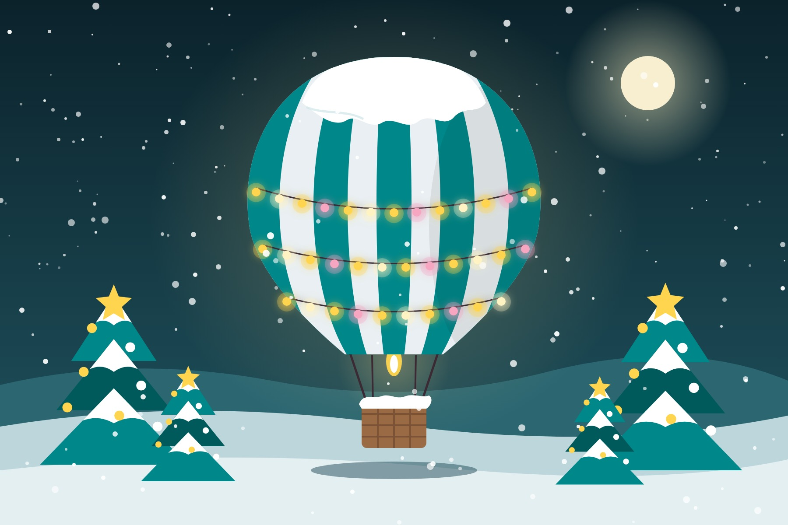
Luftballongen en kveld, Stavanger
Grønn ballong med glødende lyslenker mot nattehimmel. 1800 × 1200 px.
-
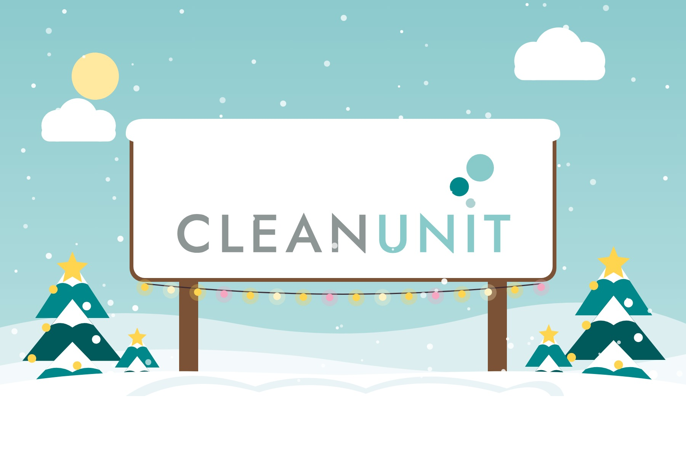
Logoen i snøen
CleanUnit-skiltet med snø på toppen og lyslenke. 1800 × 1200 px.
-
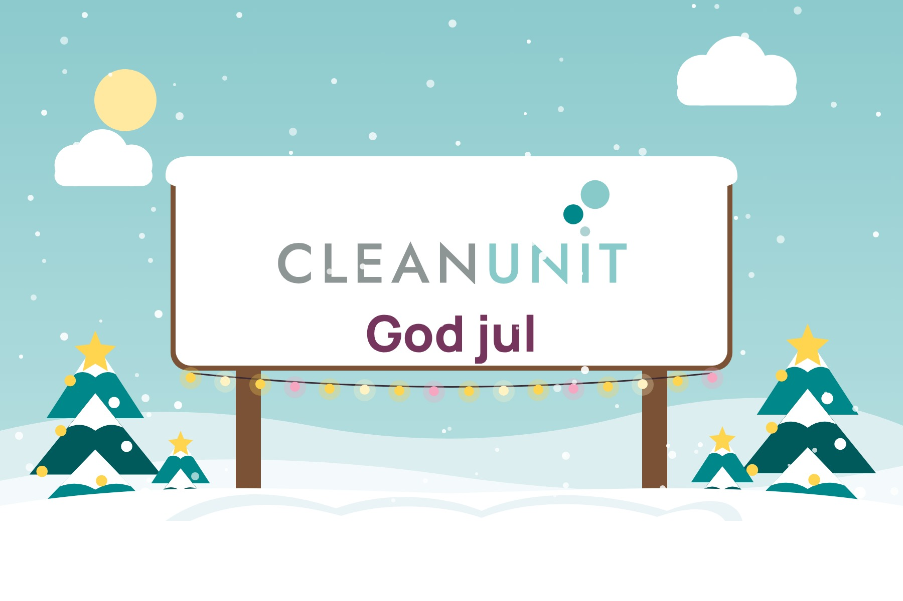
Logoen med «God jul»
Samme skilt i snøen, med julehilsen under logoen. 1800 × 1200 px.
-
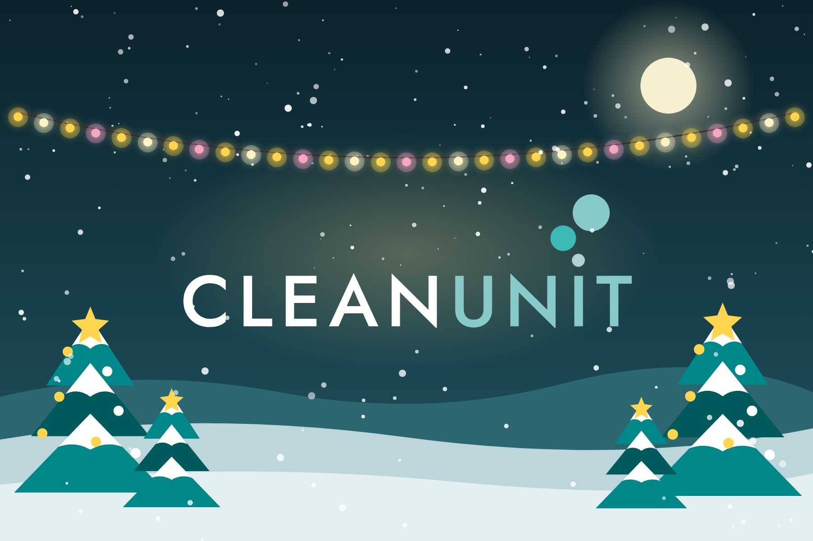
Logoen en vinterkveld
Lys logo mot nattehimmel, med lyslenke og måne. 1800 × 1200 px.
-
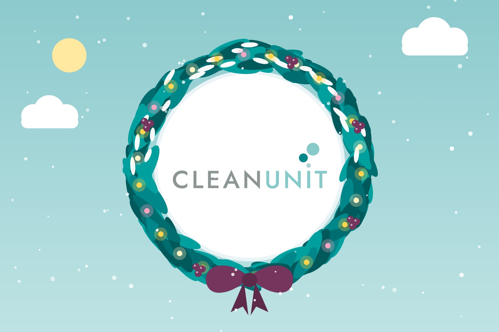
Logoen i en krans
Grankrans med snø, lys, bær og burgunder sløyfe rundt logoen. 1800 × 1200 px.
Alle bildene er jpg eller png, som Word tåler godt. Siden er ikke lenket fra menyen og vises ikke i søkemotorer.